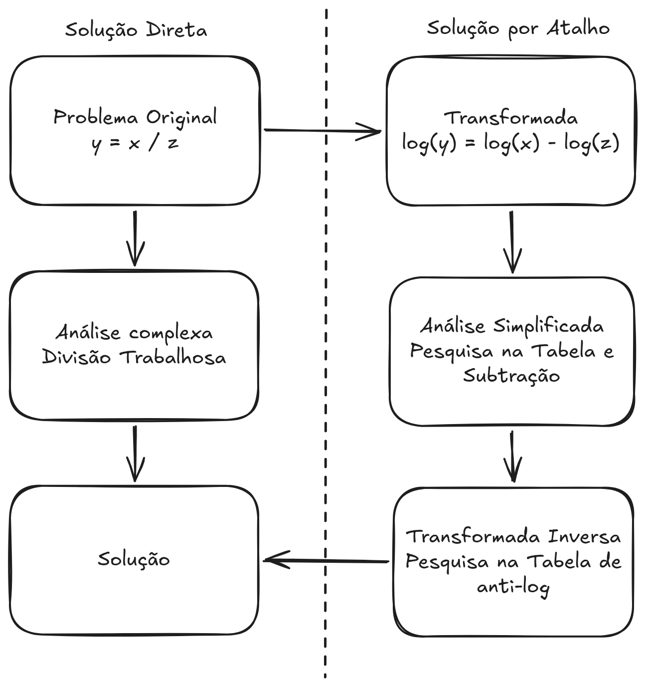
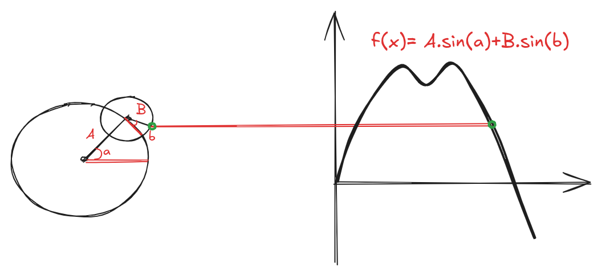
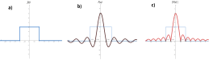
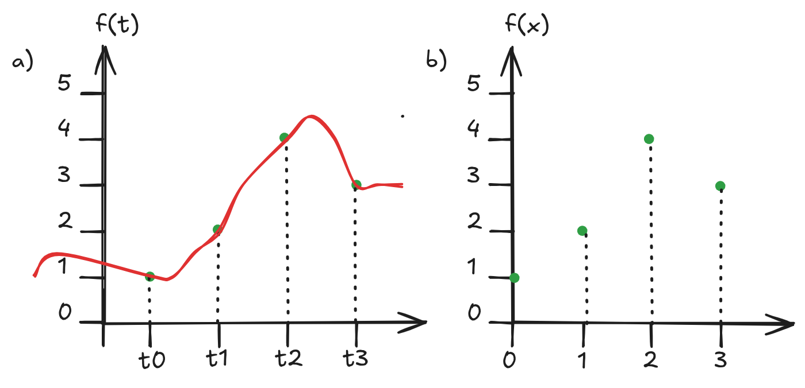
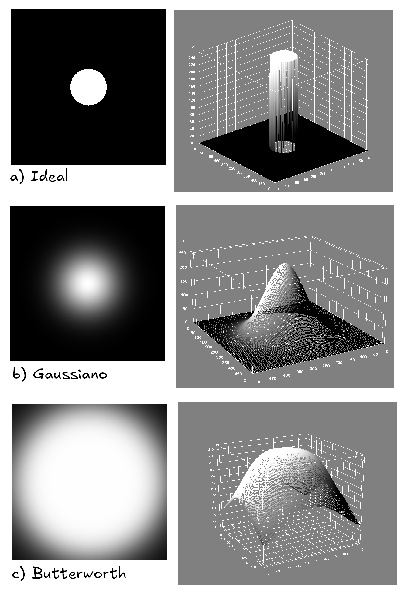

4 Transformada de Fourier
A análise de imagens no domínio espacial, embora intuitiva e amplamente utilizada, apresenta limitações quando se deseja compreender a distribuição de padrões periódicos, texturas e estruturas repetitivas. Para superar essas limitações, recorre-se à análise no domínio da frequência, na qual a imagem é representada como uma combinação de componentes senoidais de diferentes frequências.
A Transformada de Fourier constitui a principal ferramenta matemática para essa mudança de domínio, sendo fundamental em diversas áreas do Processamento Digital de Imagens, como filtragem, compressão, restauração e análise de textura.
4.1 Domínio Espacial e Domínio da Frequência
No domínio espacial, uma imagem é representada diretamente por seus valores de intensidade, descritos por uma função bidimensional \(f(x,y)\). Cada ponto \((x,y)\) corresponde a um pixel da imagem.
No domínio da frequência, a mesma imagem é descrita em termos de suas componentes de frequência espacial. Frequências baixas estão associadas a variações suaves de intensidade, enquanto frequências altas representam transições abruptas, como bordas e detalhes finos.
Essa mudança de representação permite compreender e manipular características da imagem que não são facilmente observáveis no domínio espacial.
4.2 Fundamento
4.2.1 Mudança de domínio como estratégia de simplificação
A resolução de muitos problemas torna-se complexa quando realizada diretamente no domínio original. Operações como divisão, convolução ou correlação frequentemente exigem alto custo computacional ou manipulações algébricas trabalhosas. Uma estratégia clássica para contornar essa dificuldade consiste em transformar o problema para outro domínio, no qual as operações envolvidas se tornam mais simples.

O diagrama da Figura 4.1 ilustra esse princípio por meio de um exemplo elementar. No domínio original, a relação
\[ y = \frac{x}{z} \]
exige uma operação de divisão, que pode ser inconveniente do ponto de vista analítico ou computacional. Ao aplicar uma transformação logarítmica, o problema é levado a um novo domínio, no qual a divisão é convertida em subtração: \[ \log(y) = \log(x) - \log(z). \] Nesse domínio transformado, a análise torna-se significativamente mais simples, pois a subtração pode ser realizada de forma direta, inclusive com o auxílio de tabelas ou métodos mais eficientes.
Após a resolução no domínio transformado, aplica-se a transformada inversa (anti-logaritmo), retornando o resultado ao domínio original. Assim, obtém-se a solução do problema inicial por meio de um caminho indireto, porém mais eficiente.
Esse raciocínio fundamenta o uso de transformadas em diversas áreas, em especial no Processamento Digital de Imagens. Transformadas como a logarítmica, a de Fourier e a de Laplace permitem converter operações complexas no domínio espacial em operações mais simples em domínios alternativos, justificando o uso da expressão “solução usando um atalho”. A mudança de domínio, portanto, não altera o problema em si, mas revela uma forma mais conveniente de resolvê-lo.
4.2.2 Histórico
Em 1807, Joseph Fourier propôs uma ideia que, à época, foi recebida com grande ceticismo: funções periódicas arbitrárias podem ser representadas como uma soma ponderada de senos e cossenos. Em outras palavras, Fourier afirmou que sinais complexos podem ser decompostos em um conjunto de oscilações simples, cada uma contribuindo com uma parcela específica para a forma final do sinal.
Essa proposta contrariava a intuição matemática dominante do início do século XIX. Muitos matemáticos questionavam como funções com descontinuidades ou formas irregulares poderiam ser descritas por combinações de funções suaves e contínuas, como senos e cossenos. Apesar das críticas iniciais, a ideia mostrou-se extremamente poderosa.
Com o desenvolvimento da série de Fourier, tornou-se possível analisar um sinal não apenas em termos de sua variação no tempo ou no espaço, mas também em termos de suas frequências constituintes. Essa mudança de perspectiva — do domínio original para o domínio da frequência — revelou que operações complexas sobre sinais podem ser compreendidas e tratadas de forma muito mais simples.
Atualmente, a ideia de Fourier é um dos pilares da ciência e da engenharia, sendo fundamental em áreas como processamento de sinais, comunicações e Processamento Digital de Imagens, onde a decomposição de uma imagem em componentes de frequência permite compreender, filtrar e modificar sua estrutura de maneira eficiente.
4.2.3 A ideia fundamental de Fourier
A função denominada “Soma das senóides”, apresentada no exemplo interativo em sequência é obtida pela soma das quatro funções (Senoide 1, Senoide 2, Senoide 3, Senoide 4). Cada uma dessas funções elementares é uma senoide com frequência e amplitude distintas. Quando combinadas, elas produzem uma forma de onda mais complexa, que já não se parece, à primeira vista, com um seno simples.
O exemplo ilustrativo seguinte, adaptado do código de Daniel Shiffman1, demonstra como uma série de Fourier pode ser utilizada para representar uma onda quadrada.
Nesse exemplo, cada termo da série é representado por um círculo trigonométrico (epiciclo). O raio de cada círculo corresponde à amplitude do termo, enquanto a frequência é representada pela velocidade de rotação do círculo. Os círculos são conectados de forma sequencial, de modo que o centro de cada círculo coincide com a extremidade do raio do círculo anterior, conforme ilustrado na Figura 4.2.

A soma dos termos da série é obtida pela projeção vertical (eixo \(y\)) do vetor resultante, formado pelo encadeamento dos raios de todos os círculos. À medida que mais termos são adicionados, a forma de onda resultante aproxima-se progressivamente de uma onda quadrada, evidenciando o princípio fundamental da série de Fourier: a representação de funções periódicas complexas como a soma de senos e cossenos.
4.3 Transformada de Fourier Unidmensional
4.3.1 Definição Matemática
A Transformada de Fourier contínua unidimensional de uma função \(f(t)\) é definida por:
\[ F(\mu) = \int_{-\infty}^{\infty} f(t), e^{-j 2\pi \mu t}, dt \]
onde:
- \(f(t)\) é o sinal no domínio do tempo (ou espaço),
- \(F(\mu)\) é a representação do sinal no domínio da frequência,
- \(\mu\) representa a frequência,
- \(j = \sqrt{-1}\) é a unidade imaginária.
O termo exponencial complexo pode ser interpretado como uma combinação de seno e cosseno, conforme a identidade de Euler:
\[ e^{j\theta} = \cos\theta + j\sin\theta \]
Assim, a Transformada de Fourier projeta o sinal original sobre um conjunto de funções base senoidais, medindo o quanto cada frequência está presente no sinal.
4.3.2 Interpretação Física e Intuitiva
Cada valor de \(F(\mu)\) é um número complexo que contém duas informações fundamentais:
Magnitude \[ |F(\mu)| = \sqrt{\operatorname{Re}^2 + \operatorname{Im}^2} \] indica a energia ou intensidade da frequência \(\mu\).
Fase \[ \phi(\mu) = \tan^{-1}\left(\frac{\operatorname{Im}}{\operatorname{Re}}\right) \] indica o deslocamento da componente senoidal no tempo.
Em muitas aplicações práticas, especialmente em Processamento de Imagens, a análise concentra-se principalmente na magnitude do espectro, pois ela revela onde a energia do sinal está concentrada.
4.3.3 Transformada Inversa de Fourier Unidimensional
A reconstrução do sinal original a partir de sua representação em frequência é realizada pela Transformada Inversa de Fourier, definida por:
\[ f(t) = \int_{-\infty}^{\infty} F(\mu), e^{j 2\pi \mu t}, d\mu \]
Essa relação garante que a Transformada de Fourier não perde informação: o sinal pode ser transformado para o domínio da frequência e recuperado integralmente, desde que todas as frequências sejam consideradas.
4.3.3.1 Um exemplo
Abaixo está um exemplo de uma cálculo no domínio contínuo para uma função da Figura 4.3 a.
\[ \begin{aligned} F(\mu) &= \int_{-\infty}^{\infty} f(t)e^{-j2\pi \mu t}\, dt \\ &= \int_{-W/2}^{W/2} A e^{-j2\pi \mu t}\, dt \\ &= \frac{-A}{j2\pi\mu} \left[e^{-j2\pi\mu t}\right]_{-W/2}^{W/2} \\ &= \frac{-A}{j2\pi\mu} \left[e^{-j\pi\mu W} - e^{j\pi\mu W}\right] \\ &= \frac{A}{j2\pi\mu} \left[e^{j\pi\mu W} - e^{-j\pi\mu W}\right] \\ &= AW \frac{\sin(\pi \mu W)}{\pi \mu W} \end{aligned} \]
onde:
\[ \sin \theta = \frac{e^{j\theta} - e^{-j\theta}}{2j} \]
A Figura 4.3 ilustra essa transformação contínua unidimensional:

A simulação em Geogebra em sequência demonstra essa função pulso, o espectro calculado e o módulo do espectro:
4.3.4 Transformada Discreta de Fourier para uma Variável
Em aplicações computacionais, os sinais são representados de forma discreta. Nesse contexto, utiliza-se a Transformada Discreta de Fourier (DFT), que opera sobre um conjunto finito de amostras. Seja \(f(x)\) um sinal discreto definido para \(x = 0,1,2,\ldots,M-1\). A DFT é definida por:
\[ F(\mu) = \sum_{x=0}^{M-1} f(x)\,e^{-j2\pi\mu x/M}, \qquad \mu = 0,1,2,\ldots,M-1 \]
Cada coeficiente \(F(\mu)\) representa a contribuição de uma frequência discreta específica no sinal original.
De forma análoga ao caso contínuo, o sinal pode ser reconstruído por meio da Transformada Discreta Inversa de Fourier (IDFT), dada por:
\[ f(x) = \frac{1}{M}\sum_{\mu=0}^{M-1} F(\mu)\,e^{j2\pi\mu x/M}, \qquad x = 0,1,2,\ldots,M-1 \]
A DFT e sua inversa formam um par de transformações mutuamente inversas, assegurando que a representação no domínio da frequência contém toda a informação necessária para a recuperação do sinal original. Esses conceitos constituem a base para algoritmos eficientes, como a Transformada Rápida de Fourier (FFT), amplamente utilizada no processamento digital de sinais e imagens.
4.4 A Transformada de Fourier Bidimensional
A Transformada de Fourier bidimensional (2D) é uma extensão natural da Transformada de Fourier unidimensional e constitui uma das ferramentas mais importantes do Processamento Digital de Imagens (PDI). Enquanto a versão unidimensional analisa sinais ao longo de uma única variável independente, a versão bidimensional permite analisar funções definidas sobre duas variáveis espaciais, como imagens digitais.
Uma imagem pode ser interpretada como uma função de intensidade luminosa \(f(x,y)\), em que \(x\) e \(y\) representam as coordenadas espaciais. A Transformada de Fourier 2D permite representar essa imagem no domínio da frequência espacial, revelando padrões, texturas e estruturas que nem sempre são evidentes no domínio espacial.
4.4.1 Motivação para o Domínio da Frequência
No domínio espacial, as informações estão organizadas de acordo com a posição dos pixels. Já no domínio da frequência, a imagem é descrita em termos de variações espaciais de intensidade.
De forma intuitiva:
- Baixas frequências correspondem a variações suaves de intensidade (regiões homogêneas).
- Altas frequências estão associadas a variações abruptas, como bordas, detalhes finos e ruído.
Muitas operações importantes, como filtragem, realce e supressão de ruído, tornam-se mais simples e intuitivas quando realizadas no domínio da frequência.
4.4.2 Definição Matemática
A Transformada de Fourier bidimensional contínua de uma função \(f(x,y)\) é definida por:
\[ F(u,v) = \int_{-\infty}^{\infty} \int_{-\infty}^{\infty} f(x,y)\, e^{-j2\pi(ux + vy)} \, dx\,dy \]
onde:
- \(f(x,y)\) é a imagem no domínio espacial;
- \(F(u,v)\) é a representação no domínio da frequência;
- \(u\) e \(v\) representam as frequências espaciais nas direções \(x\) e \(y\);
- \(j = \sqrt{-1}\).
Essa expressão mostra que a imagem é projetada sobre um conjunto de funções base senoidais bidimensionais, cada uma caracterizada por uma orientação e uma frequência espacial específicas.
4.4.3 Interpretação do Espectro de Fourier Bidimensional
O resultado da Transformada de Fourier 2D é uma função complexa, em que cada ponto \((u,v)\) contém informações sobre uma frequência espacial específica.
Assim como no caso unidimensional, cada coeficiente possui:
- Magnitude: \[ |F(u,v)| = \sqrt{\operatorname{Re}^2 + \operatorname{Im}^2} \] que indica a intensidade daquela frequência;
- Fase, que codifica a posição espacial relativa das estruturas da imagem.
Em aplicações práticas, a visualização do espectro geralmente utiliza a magnitude em escala logarítmica:
\[ S(u,v) = \log\bigl(1 + |F(u,v)|\bigr) \]
Essa transformação é necessária porque a faixa dinâmica dos valores do espectro é muito ampla.
4.4.4 Frequência Espacial e Orientação
Na Transformada de Fourier 2D:
- A distância ao centro do espectro está relacionada à frequência espacial;
- A direção em relação ao centro indica a orientação das estruturas na imagem.
Por exemplo:
- Linhas verticais na imagem geram componentes dominantes ao longo do eixo horizontal do espectro;
- Texturas periódicas produzem picos bem definidos em posições específicas do domínio da frequência.
Assim, o espectro de Fourier fornece uma poderosa ferramenta para análise estrutural e direcional de imagens.
4.4.5 Transformada Inversa de Fourier Bidimensional
A imagem original pode ser recuperada a partir de seu espectro por meio da Transformada Inversa de Fourier 2D, dada por:
\[ f(x,y) = \int_{-\infty}^{\infty} \int_{-\infty}^{\infty} F(u,v)\, e^{j2\pi(ux + vy)} \, du\,dv \]
Essa relação garante que a transformação é reversível e que nenhuma informação é perdida, desde que todas as frequências sejam preservadas.
No contexto de imagens digitais, que são funções discretas e bidimensionais, utiliza-se a Transformada Discreta de Fourier (DFT), que fornece uma representação igualmente discreta no domínio da frequência.
4.4.6 Transformada Discreta de Fourier Bidimensional
Seja uma imagem digital \(f(x,y)\) de dimensões \(M \times N\). A Transformada Discreta de Fourier bidimensional é definida por:
\[ F(u,v) = \sum_{x=0}^{M-1} \sum_{y=0}^{N-1} f(x,y) , e^{-j2\pi\left(\frac{ux}{M} + \frac{vy}{N}\right)} \]
onde (u) e (v) representam as coordenadas no domínio da frequência e (j) é a unidade imaginária.
A transformada inversa permite recuperar a imagem original a partir de sua representação espectral:
\[ f(x,y) = \frac{1}{MN} \sum_{u=0}^{M-1} \sum_{v=0}^{N-1} F(u,v) , e^{j2\pi\left(\frac{ux}{M} + \frac{vy}{N}\right)} \]
4.5 Transformada Rápida de Fourier (FFT)
A Transformada Discreta de Fourier (DFT) é uma ferramenta fundamental para análise no domínio da frequência. Entretanto, sua implementação direta possui alto custo computacional.
Para um sinal bidimensional de tamanho \(M \times N\), a complexidade é da ordem de:
\[ \mathcal{O}((MN)^2) \]
No caso de uma imagem de \(1024 \times 1024\) pixels, isso implica aproximadamente um trilhão de multiplicações e somas, tornando o cálculo direto inviável para muitas aplicações práticas.
A Transformada Rápida de Fourier (FFT) reduz essa complexidade para:
\[ \mathcal{O}(MN \log_2 MN) \]
Para a mesma imagem, o número de operações cai para cerca de 20 milhões, uma redução substancial.
A ideia central da FFT é reescrever a DFT como a combinação de DFTs menores.
4.5.1 Desenvolvimento Matemático
Considere a DFT unidimensional de tamanho \(M\):
\[ F(u) = \sum_{x=0}^{M-1} f(x) W_M^{ux} \]
onde
\[ W_M = e^{-j\frac{2\pi}{M}} \]
Suponha que \(M = 2K\), isto é, \(M\) é potência de 2.
Então:
\[ F(u) = \sum_{x=0}^{2K-1} f(x)W_{2K}^{ux} \]
Separando os termos pares e ímpares:
\[ F(u) = \sum_{x=0}^{K-1} f(2x)W_{2K}^{u(2x)} + \sum_{x=0}^{K-1} f(2x+1)W_{2K}^{u(2x+1)} \]
Utilizando a propriedade:
\[ W_{2K}^{2ux} = W_K^{ux} \]
obtemos:
\[ F(u) = \sum_{x=0}^{K-1} f(2x)W_K^{ux} + \sum_{x=0}^{K-1} f(2x+1)W_K^{ux} W_{2K}^{u} \]
Definindo:
\[ F_{par}(u) = \sum_{x=0}^{K-1} f(2x)W_K^{ux} \]
\[ F_{impar}(u) = \sum_{x=0}^{K-1} f(2x+1)W_K^{ux} \]
temos a expressão fundamental da FFT:
\[ F(u) = F_{par}(u) + W_{2K}^{u} F_{impar}(u) \]
Além disso, usando a propriedade:
\[ W_{2K}^{u+K} = -W_{2K}^{u} \]
obtemos:
\[ F(u+K) = F_{par}(u) - W_{2K}^{u} F_{impar}(u) \]
Essa decomposição mostra que a DFT de tamanho \(2K\) pode ser escrita como duas DFTs de tamanho \(K\) combinadas por fatores complexos.
4.5.2 Restrição
A FFT radix-2 exige que:
\[ M = 2^n \]
ou seja, o número de pontos deve ser potência de 2.
4.5.3 Reordenação Bit-Reversa (Bit Reversal)
Durante a decomposição recursiva da FFT, cada termo pode ser classificado, em cada etapa, como par \(p\) ou ímpar \(i\). Ao substituir \(p\) por 0 e \(i\) por 1, obtém-se uma sequência binária associada ao caminho percorrido pelo termo ao longo das divisões sucessivas. O índice original correspondente a esse termo é exatamente o número binário formado com a ordem dos bits invertida. Essa reorganização sistemática dos índices é conhecida como bit reversal (reordenação bit-reversa) e permite que o algoritmo seja implementado de forma iterativa e eficiente.
4.5.3.1 Exemplo para \(N = 8\)
Considere a seguinte função discreta:
\[ \{f(0), f(1), f(2), f(3), f(4), f(5), f(6), f(7)\} \]
Invertendo os bits:
| Original | Binário | Bit-reverso | Novo índice |
|---|---|---|---|
| f(0) | 000 | 000 | f(0) |
| f(1) | 001 | 100 | f(4) |
| f(2) | 010 | 010 | f(2) |
| f(3) | 011 | 110 | f(6) |
| f(4) | 100 | 001 | f(1) |
| f(5) | 101 | 101 | f(5) |
| f(6) | 110 | 011 | f(3) |
| f(7) | 111 | 111 | f(7) |
A reordenação dos dados permite que o algoritmo seja implementado de forma iterativa e eficiente.
4.5.4 Estrutura Butterfly
A combinação dos termos pode ser representada por:
\[ \begin{aligned} \text{saída superior} &= a + Wb \\ \text{saída inferior} &= a - Wb \end{aligned} \]
Essa estrutura é conhecida como butterfly (imagem seguinte), pois o diagrama de fluxo assume esse formato gráfico. A aplicação sucessiva dessa decomposição reduz o problema até termos triviais de tamanho 1.
4.5.4.1 Um exemplo
A Figura 4.4 a seguir ilustra um conjunto discreto de amostras de um sinal unidimensional no domínio espacial. Esse exemplo simples permite compreender, de forma concreta, como a Transformada Discreta de Fourier (DFT) decompõe um sinal em suas componentes de frequência.

Considere o sinal discreto \(f(x)\), definido para \(x = 0,1,2,3\), com valores \(f(0)=1\), \(f(1)=2\), \(f(2)=4\) e \(f(3)=3\), obtidos de uma função \(f(t)\). O coeficiente de frequência zero da DFT, \(F(0)\), corresponde à soma de todas as amostras do sinal e representa a componente DC(Direct Current), isto é, o valor médio escalado do sinal. Assim, tem-se:
\[ \begin{aligned} F(0) &= \sum_{x=0}^{3} f(x) \\ &= f(0) + f(1) + f(2) + f(3) \\ &= 1 + 2 + 4 + 3 = 10 \end{aligned} \]
O coeficiente \(F(1)\) é obtido multiplicando cada amostra do sinal por um termo exponencial complexo que representa uma frequência específica. Esse processo projeta o sinal sobre uma base senoidal complexa. Para \(u = 1\), obtém-se:
\[ \begin{aligned} F(1) &= \sum_{x=0}^{3} f(x)e^{-j2\pi(1)x/4} \\ &= 1e^{0} + 2e^{-j\pi/2} + 4e^{-j\pi} + 3e^{-j3\pi/2} \\ &= -3 + 1j \end{aligned} \]
De forma análoga, os demais coeficientes da DFT são calculados, resultando em:
\[ F(2) = \sum_{x=0}^{3} f(x)e^{-j2\pi(2)x/4} = 0, \qquad F(3) = \sum_{x=0}^{3} f(x)e^{-j2\pi(3)x/4} = -3 - 1j \]
Esses valores constituem a representação do sinal no domínio da frequência, na qual cada coeficiente complexo codifica a contribuição de uma frequência específica, por meio de sua magnitude e fase.
Uma vez conhecidos os coeficientes \(F(u)\), é possível reconstruir o sinal original aplicando a Transformada Discreta Inversa de Fourier (IDFT) (considerando \(j\) ao invés de \(-j\) nos coeficientes e multiplicando o resultado do somatório por \(\frac{1}{N}\)). Por exemplo, o valor da amostra \(f(0)\) pode ser obtido por:
\[ \begin{aligned} f(0) &= \frac{1}{4}\sum_{u=0}^{3} F(u)e^{j2\pi u(0)} \\ &= \frac{1}{4}\sum_{u=0}^{3} F(u) \\ &= \frac{1}{4}[10 - 3 + 1j + 0 - 3 - 1j] \\ &= \frac{1}{4}[4] = 1 \end{aligned} \]
O exemplo interativo seguinte simula os mesmos cálculos com as entradas reordenadas e os cálculos sendo realizados considerando o esquema butterfly:
Usando o esquema butterfly também é possível reconstruir o sinal original. Basta utilizar os valores dos coeficientes \(F(u)\) reordenados como entrada, considerar \(j\) ao invés de \(-j\) nos coeficientes e multiplicar o resultado do somatório por \(\frac{1}{N}\).
4.5.5 Centralização do Espectro
Por definição, a frequência zero (componente DC) da Transformada de Fourier está localizada na origem \((u,v)=(0,0)\), que aparece nos cantos da imagem do espectro.
Para facilitar a análise visual, é comum centralizar o espectro, deslocando a componente DC para o centro da imagem. Isso pode ser feito por meio da modulação espacial:
\[ f_c(x,y) = f(x,y)\,(-1)^{x+y} \]
ou, alternativamente, pela troca dos quadrantes do espectro após a transformação. Essa etapa não altera o conteúdo espectral, apenas reorganiza sua visualização.
O exemplo interativo a seguir apresenta um demonstração do cálculo do espectro de uma imagem (que na entrada é redimensionada para dimensão 256x256). Depois o espectro é calculado e apresentado ao lado da imagem selecionada:
4.6 Filtragem no Domínio da Frequência
A filtragem no domínio da frequência baseia-se na Transformada de Fourier. Em vez de operar diretamente sobre os pixels da imagem, realiza-se a modificação do seu espectro. Essa abordagem permite manipular separadamente as diferentes componentes de frequência presentes na imagem.
Seja \(f(x,y)\) uma imagem no domínio espacial. O processo de filtragem inicia-se com o cálculo da Transformada de Fourier da imagem, representado por
\[ F(u,v) = \mathcal{F}\{f(x,y)\}. \]
Em seguida, define-se uma função filtro no domínio da frequência, denotada por \(H(u,v)\). Esse filtro atua como uma máscara espectral que modifica seletivamente determinadas frequências.
A etapa seguinte consiste na multiplicação ponto a ponto entre o espectro da imagem e o filtro:
\[ G(u,v) = H(u,v)F(u,v). \]
Por fim, aplica-se a transformada inversa de Fourier para reconstruir a imagem filtrada:
\[ g(x,y) = \mathcal{F}^{-1}\{G(u,v)\}. \]
A função \(g(x,y)\) corresponde à imagem resultante após a filtragem.
Os filtros no domínio da frequência geralmente são definidos em função da distância radial ao centro do espectro. Essa distância é dada por:
\[ D(u,v) = \sqrt{(u - M/2)^2 + (v - N/2)^2}. \]
O centro do espectro corresponde às baixas frequências, associadas às variações suaves de intensidade. À medida que se afasta do centro, encontram-se as altas frequências, responsáveis por bordas e detalhes finos.
O filtro ideal (representado na Figura 4.5 a) passa-baixa possui uma transição abrupta entre as frequências preservadas e as atenuadas. Sua definição é:
\[ H(u,v) = \begin{cases} 1, & D(u,v) \le D_0 \\ 0, & D(u,v) > D_0 \end{cases} \]
onde \(D_0\) representa a frequência de corte. Embora simples, esse filtro pode introduzir artefatos como o fenômeno de Gibbs2 devido à descontinuidade na resposta espectral.

O filtro gaussiano (representado na Figura 4.5 b) apresenta uma transição suave e contínua, evitando descontinuidades abruptas. Sua expressão é:
\[ H(u,v) = e^{-\frac{D(u,v)^2}{2D_0^2}}. \]
Esse filtro não produz ringing significativo e resulta em suavização progressiva das altas frequências.
O filtro Butterworth (representado na Figura 4.5 c) representa um compromisso entre o ideal e o gaussiano. Sua formulação é:
\[ H(u,v) = \frac{1}{1 + \left(\frac{D(u,v)}{D_0}\right)^{2n}}, \]
onde \(D_0\) é a frequência de corte e \(n\) é a ordem do filtro. Para valores pequenos de \(n\), a transição é suave. À medida que \(n\) aumenta, o comportamento aproxima-se do filtro ideal.
O exemplo interativo seguinte apresenta uma visualização 3D destes três filtros. Pode-se escolher o raio do Corte e a Ordem (para o caso do filtro Butterworth):
Filtros passa-alta podem ser obtidos a partir dos passa-baixa por meio da relação:
\[ H_{PA}(u,v) = 1 - H_{PB}(u,v). \]
Nesse caso, as altas frequências são preservadas, destacando bordas e estruturas finas da imagem.
O processo de restauração do espectro consiste em transformar a imagem para o domínio da frequência, modificar seletivamente suas componentes espectrais e reconstruí-la por meio da transformada inversa. Matematicamente, esse procedimento pode ser representado por:
\[ g(x,y) = \mathcal{F}^{-1} \{H(u,v)\mathcal{F}[f(x,y)]\}. \]
Essa abordagem permite suavização, realce de detalhes, redução de ruído e correção de degradações, oferecendo maior controle matemático sobre o comportamento do filtro e eficiência computacional quando implementada via FFT.
O Exemplo interativo seguinte apresenta uma aplicação do processo de filtragem por Fourier.
4.7 Vantagens e Limitações
A análise no domínio da frequência oferece uma poderosa ferramenta para o processamento de imagens, permitindo a implementação de operações que seriam complexas no domínio espacial. No entanto, o custo computacional da transformada e a perda de localização espacial direta são aspectos que devem ser considerados.
Na prática, o uso da Transformada Rápida de Fourier (FFT) torna a aplicação da DFT viável mesmo para imagens de grandes dimensões.
4.8 Considerações Finais
A Transformada de Fourier desempenha um papel central no Processamento Digital de Imagens, fornecendo uma base matemática sólida para a análise e manipulação de informações no domínio da frequência. A compreensão de seus fundamentos é essencial para o estudo de técnicas avançadas de filtragem, restauração e análise espectral de imagens.